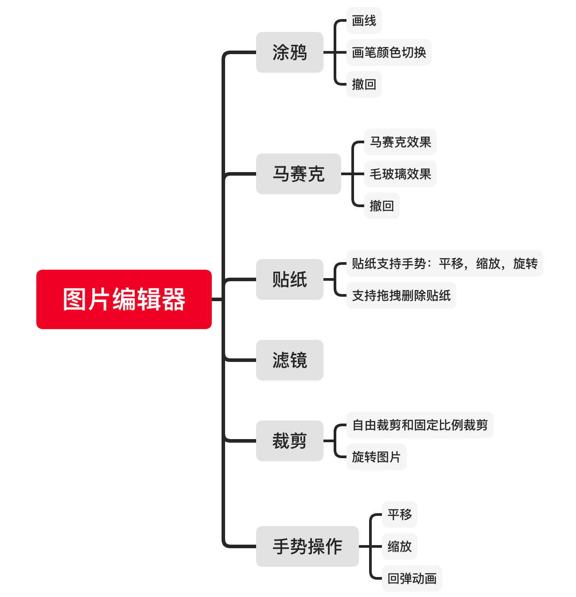
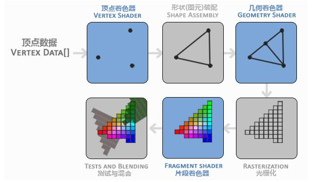
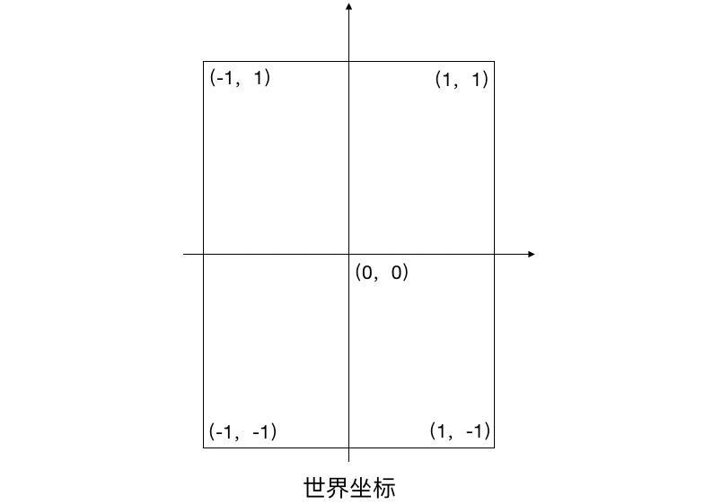
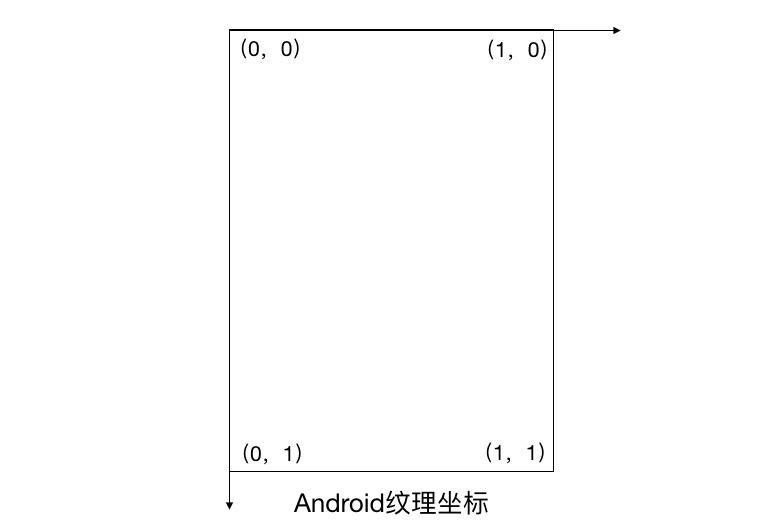
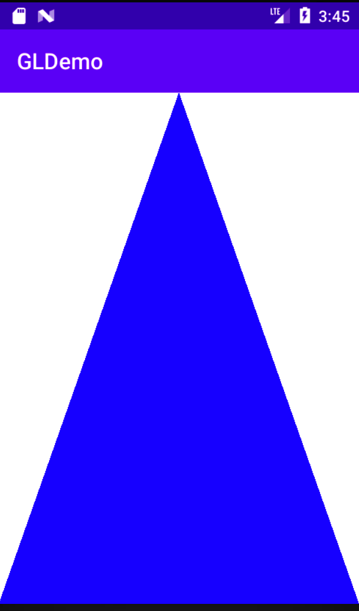
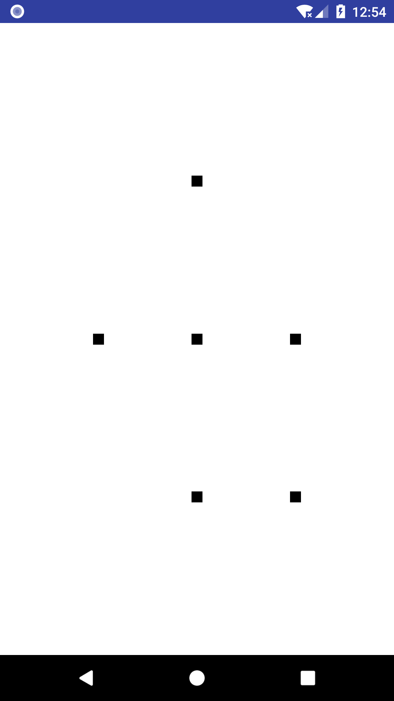
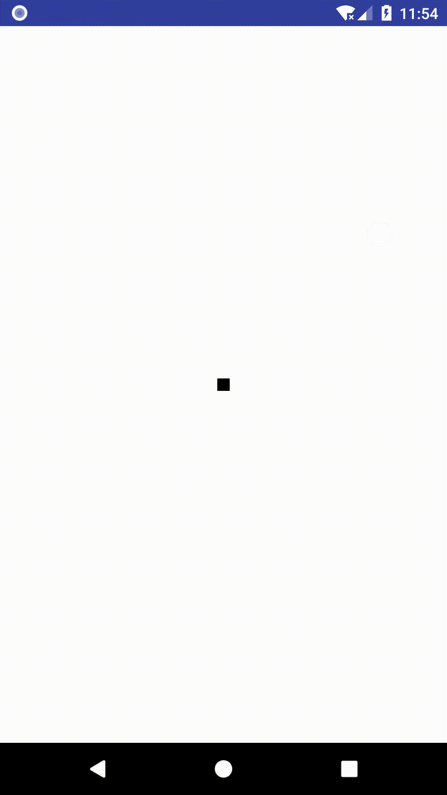
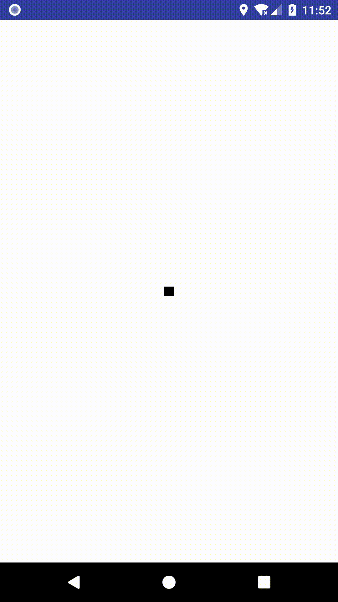
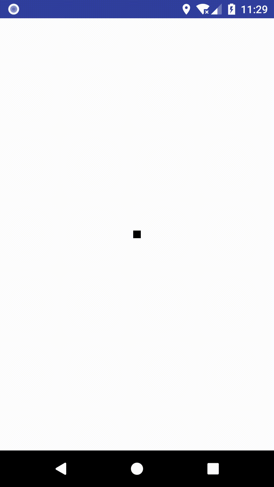
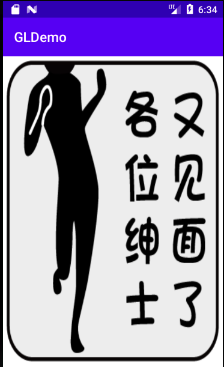

1. 项目简介
1.1 目标
我们要做的就是实现一个图片编辑器，能够提供一些基础的，常用的图片编辑功能，并且最终能以SDK的形式接入到网易新闻客户端。
1.2 意义
从产品的角度看：
可以激励UGC个性化创作，满足用户的多样性需求。
从技术角度看：
可以积累相关的技术经验，增加团队的技术沉淀，为后续相关业务拓展提供技术支持。
1.3 功能拆解
我们的图片编辑器从功能上划分，主要分为以下几个主要部分：
1.4 技术选型
明确了需求后，接下来就是考虑技术方案了。做图片编辑器，主要有两种方案：
- 使用Android提供的Canvas相关API
- 使用OpenGL ES
这两种方案各有优劣，分析如下：
Canvas方案:
- 优点
- 使用简单，学习成本低，API较为完善，需要踩的坑少
- 几乎不需要适配机型
- 缺点
- 在没有硬件加速情况下，渲染效率没有OpenGL高，但影响不大
- 做滤镜不方便
OpenGL方案：
- 优点
- 直接和GPU交互更接近底层硬件，渲染效率更高
- 做滤镜方便
- 缺点
- 学习成本比Canvas高，踩坑多
- 由于硬件相关，有时可能有机型适配问题
我们最终选择了OpenGL的方案，主要考虑到后续还要做视频的编辑器，而OpenGL是做音视频编辑绕不过的一道坎，我们可以提前积累经验，并且OpenGL在实现滤镜这个功能上要方便不少。虽然使用OpenGL要踩的坑会多一些，但从长远考虑，这也增加了我们的技术积累，也许以后我们也可以在实现一些其他功能时用到OpenGL。
2. OpenGL简介
2.1 OpenGL是什么？
- OpenGL 即 Open Graphics Library，是一个功能强大、调用方便的底层图形库，它定义了跨编程语言、跨平台的专业图形程序接口，可用于二维或三维图像的处理与渲染
- 由于只是软件接口，所以具体底层实现依赖硬件设备制造商。
2.2 OpenGL ES又是什么？
OpenGL ES 全称：OpenGL for Embedded Systems，是OpenGL 的子集，是针对手机，PAD等小型设备设计的，删减了不必须的方法、数据类型、功能，减少了体积，优化了效率。因此目前在IOS和Android平台上使用的都是OpenGL ES。
那么，在Android平台上支持哪些OpenGL ES版本呢？如下表：
| OpenGL ES版本 | 基于的OpenGL版本 | Android上引入的版本 | 兼容性 | 功能、特色 |
|---|---|---|---|---|
| 1.0 & 1.1 | 1.3 & 1.5 | Android 1.0 | 固定的图像管道，开发难度相比2.0低 | |
| 2.0 | 2.0 | Android 2.2 (API level 8) | 不兼容1.x | 可编程的渲染管道，性能效率更高，开发难度更高 |
| 3.0 | 3.x | Android 4.3 (API level 18) | 兼容2.0 | 性能更高，支持ETC2格式的透明纹理压缩 |
| 3.1 | 4.x | Android 5.0 (API level 21) | 兼容2.0/3.0 | 新增计算着色器、单独的着色器对象等新特性，更多查看Android5.0特性 |
2.3 OpenGL的应用场景
- 游戏
- 视频播放器、视频编辑
- 相机、图片处理
- 对图像处理及时性要求比较高的应用
其中游戏应该是应用OpenGL最多的了，但是随着现在抖音，快手这样的短视频App的流行，OpenGL在视频编辑，相机，图像处理上也得到了很广泛的应用。例如我们常见的图片，视频的美颜和滤镜，一些酷炫的视频效果，都是通过OpenGL来渲染实现的。
2.4 为什么OpenGL 的渲染效率高？
目前图像渲染主要有两种方式，一种是CPU渲染，一种是GPU渲染，而GPU是专门处理图像的处理器，更擅长并行浮点运算，可以用来对许许多多的像素做并行运算，也就是说直接使用GPU渲染可以认为是一种硬件加速。
而OpenGL是一套跨平台的软件接口，由各个硬件厂商具体实现其接口，能直接操作GPU进行渲染，所以渲染效率更高。
2.5 OpenGL ES 开发方式
在Android平台，有两种方式：
- 通过Android封装的OpenGL相关API，直接使用Java语言开发
- 通过C语言开发，上层再通过JNI调用，如果需要跨平台的话，可以使用这种方式
由于我们做图片编辑器不考虑跨平台，所以采用第一种方式。
3. OpenGL 基础概念
3.1 OpenGL 基本图元
OpenGL ES中，只提供了3种基本图元：点、线、三角形。而其他我们熟知的图形，都是基于这3种基本图形处理拼接合成的。
3.2 OpenGL 渲染流程
OpenGL的渲染流程也可以称之为渲染管线，如下图所示：

主要流程说明如下：
- 输入图形的顶点数据，如图上所示绘制一个三角形，那么就是输入这个三角形的三个顶点坐标数据。
- 经过顶点着色器对输入的每个顶点做处理，这一步是可编程的，顶点着色器的代码是我们自己来编写的，我们可以在这一步做一些顶点坐标变换等操作。
- 上面说过OpenGL提供了点，线，三角形三种基本图元，所以这一步就是根据顶点数据来组装出几何图形。
- 将装配好的图形，分割成若干个小片段，这一步就是光栅化。
- 接着给每一个片段进行上色，每一个片段都会经过片段着色器程序处理来完成上色，这一步也是可编程的。
- 上色后，经过一系列的测试，混合，最终将图像显示到屏幕上。
在整个流程中，我们需要重点关注的就是顶点着色器和片段着色器，这两个部分是可编程的，其他步骤都是由OpenGL自动完成的，我们不用关心也无法干预。
着色器是什么呢？其实，着色器可以简单理解为一段可以跑在GPU上的小程序，顶点着色器程序控制顶点位置，片段着色器程序则控制给片段上色，我们可以通过编写着色器代码来控制我们的图像如何渲染。
3.3 GLSL
既然顶点着色器和片段着色器是可编程的，那么我们如何编写自己的着色器代码呢？答案就是使用GLSL。
GLSL全称OpenGL Shading Language ，是一个以C语言为基础的高阶着色语言，所以他的语法还是比较简单的，只是比C语言多了一些内建变量，内建函数。
先看一段简单的顶点着色器代码：
1 | private static final String VERTEX_SHADER = "" + |
先看第一行，attribute 是一个变量修饰符，一般用于各个顶点各不相同的量。如顶点颜色、坐标等。在这个例子里a_Position 这个变量就是表示顶点的坐标。而vec4 在这里表示这是一个四维向量，包含了x，y，z，w四个分量，相应的，在GLSL还有vec2，vec3类型的变量。
Ps：上面说了GLSL是基于C语言设计的语言，所以除了像vec4这样的向量外，GLSL也和C语言一样也有bool，int，float这样的标量。
接下来，声明了一个main函数，这是着色器的入口函数，当然你也可以像C语言一样声明其他的函数。
gl_Position这是一个内建变量，他决定了当前处理的这个顶点的最终位置，这一行代码的含义就是把顶点坐标a_Position直接赋值给gl_Position，告诉OpenGL我这个顶点最终要在什么位置绘制。
最后一行，gl_PointSize这也是一个内建变量，他决定了当前这个顶点的大小是多少。
看完顶点着色器，再看一下片段着色器：
1 | private static final String FRAGMENT_SHADER = "" + |
第一行的声明用来定义所有浮点类型的默认精度，精度从低到高优lowp，mediump，highp三种，但只有部分硬件是支持highp的，默认是highp
第二行的uniform也是一个变量修饰符，一般用于对所有顶点都相同的量。比如光源位置，统一变换矩阵等。这里的变量u_Color同样是一个四维向量，用来存储我们要渲染的颜色。
再看main函数里，gl_FragColor这是一个内建变量，用来决定当前处理的这个片段是什么颜色的，这里我们直接把u_Color表示的颜色赋值给他，假如我们给u_Color传递的值是蓝色，那么上面的这一段程序就会把处理的每一个片段都染成蓝色，最终渲染出的整个图形自然也全是蓝色。
输入变量和输出变量：attribute变量和uniform变量一般都是着色器的输入变量，其值由我们来传入，比如图形的顶点坐标，而gl_Position这样的变量则是输出变量，他的值将会输出给渲染管线中的下一个环节。
简单总结一下GLSL：
修饰符：
- attribute：用于表示所有顶点都不同的量
- uniform：用于表示所有顶点都相同的量
内建变量：
- gl_Position：顶点着色器中的内建变量，表示顶点的最终位置
- gl_PointSize：顶点着色器中的内建变量，表示顶点的大小
- gl_FragColor：片段着色器中的内建变量，表示片段的颜色值
除了上面说的这些，GLSL还有很多其他特性和内建变量，内建函数，具体使用的时候再看。
关于GLSL，可以参考这篇文章：
https://blog.csdn.net/junzia/article/details/52830604
3.4 OpenGL的坐标系
主要涉及的坐标系有两个，世界坐标，纹理坐标，如下图所示：


世界坐标：即OpenGL自己世界的坐标，表示每个顶点要在哪个位置显示。要注意这和Android的屏幕坐标是不一样的，Android屏幕坐标原点在左上角，而OpenGL世界坐标原点在中心。另外，OpenGL世界坐标是一个归一化坐标系，什么意思呢？就是说OpenGL世界坐标系的范围永远是**-1到1**，不管屏幕多宽多高，其坐标也都是-1到1之间。所以，我们在开发时，需要将Android的屏幕坐标转换为OpenGL世界坐标再传递给OpenGL。
纹理坐标：表示应该从纹理的哪个位置去取色，也就是说这个坐标是相对于纹理自身的，我们把根据纹理坐标从纹理相应位置取色这个过程称为采样。在Android平台，原点在左上角，范围是0到1。
那么两个坐标系的关系是什么？简单讲就是世界坐标决定了在哪里显示，纹理坐标决定了在纹理的哪个位置取色。举个简单的例子：假如我们现在有一张图片，我们想在屏幕左上角这个位置绘制一个点，并且这个点的颜色是图片左上角的像素值，那么我们这个点的世界坐标就是（-1，1），而这个点的色值对应的就是这个图片的（0，0）这个纹理坐标的像素值。
4. Android平台OpenGL开发实践
在了解了OpenGL的一些基础概念后，接下来再看在Android平台上如何使用OpenGL进行开发。
4.1 GLSurfaceView
在Android平台上使用OpenGL开发，一般都会直接使用Android系统提供的GLSurfaceView，因为Android已经在GLSurfaceView中封装了一些基础流程。
GLSurfaceView继承自SurfaceView，他的渲染工作都是在单独的子线程中完成的。
使用GLSurfaceView渲染，需要我们自己实现Renderer接口：
1 | public interface Renderer { |
- onSurfaceCreated()：GLSurfaceView内的Surface被创建时会被调用
- onSurfaceChanged()：Surface尺寸改变时调用
- onDrawFrame()：绘制每一帧时调用
在GLSurfaceView创建后，会依次调用这三个方法，之后每一次绘制都会调用onDrawFrame()方法，我们就在这个方法里进行具体的绘制。
GLSurfaceView的渲染模式：
- RENDERMODE_CONTINUOUSLY：不停地渲染，也就是会一直回调onDrawFrame()
- RENDERMODE_WHEN_DIRTY：只有调用了requestRender()之后才会触发渲染回调onDrawFrame()方法
queueEvent()方法：
之前提到，GLSurfaceView会在一个单独的子线程完成渲染，而调用queueEvent()方法则可以插入一个任务到渲染线程上执行。
需要注意的是：
OpenGL是基于线程的一个状态机，有关OpenGL的操作，比如创建纹理ID，初始化，渲染等，都必须要在渲染线程中完成，否则会造成异常。 所以，Renderer中的三个方法也都是在渲染线程中回调的。
4.2 用OpenGL绘制一个三角形
接下来，我们将通过使用OpenGL绘制一个蓝色的三角形来熟悉一下Android平台上OpenGL开发的流程。
4.2.1 初始化GLSurfaceView
在布局文件中声明一个撑满全屏的GLSurfaceView：
1 | <FrameLayout xmlns:android="http://schemas.android.com/apk/res/android" |
然后给GLSurfaceView做一些初始化设置，并设置一个我们自己实现的Renderer就可以了
1 | GLSurfaceView glSurfaceView = findViewById(R.id.surface); |
GLSurfaceView已经设置好了，接下来只要看我们怎么实现Renderer就好了
4.2.2 编写着色器代码
在我们的Renderer中，先定义好我们的着色器代码，这里我们直接用String保存着色器代码，当然也可以把着色器代码写在文件里，然后创建Renderer时从文件读出来。
先看顶点着色器：
1 | private static final String VERTEX_SHADER = "" + |
代码很简单，就是把a_Position赋值给内建变量gl_Position，告诉OpenGL我们的顶点的位置，之后我们只要把三角形的顶点坐标传给a_Position就可以了。
再看片段着色器：
1 | private static final String FRAGMENT_SHADER = "" + |
也很简单，就是把我们传进来的u_Color的值也就是蓝色赋值给内建变量gl_FragColor，即图形的每个片段都染成蓝色，这样整个图形就都是蓝色了。
4.2.3 初始化顶点坐标数据
由于只是画一个三角形，不涉及纹理，所以只要提供顶点坐标就可以了，我们要画一个全屏的三角形，所以三个顶点的世界坐标就是(0,1)，(-1,-1)，(1,-1)。
1 | /** |
然后在Renderer的构造函数中调用下面这个initData，因为我们需要把顶点数据放到ByteBuffer中用来后面和OpenGL通信
1 | private void initData() { |
这里我们开辟一段Native内存，大小就是我们的3个顶点所要占据的大小(6个浮点数，每个浮点占4字节，就是6*4=24)
4.2.4 编译着色器代码
这一步我们在onSurfaceCreated回调里做:
1 |
|
第一行就是设置一下OpenGL清屏是用什么颜色，这里我们设置为白色。需要注意的是：OpenGL里颜色用四维向量表示RGBA，但是四个分量的范围是01，而不是0255
接下来就是把我们上面写的着色器代码给编译了，由于这一部分的代码都是固定写法，所以这里把他封装成静态工具方法：
1 | /** |
编译主要分4步：
- 编译顶点着色器代码，返回一个着色器对象id
- 编译片段着色器代码，返回一个着色器对象id
- 链接程序：将顶点着色器、片段着色器进行链接，组装成一个OpenGL程序。
- 链接后会返回一个程序id，调用 GLES20.glUseProgram(program)这个方法，告知OpenGL要使用哪个程序。
至于具体的编译着色器代码和链接程序的方法，由于都是固定写法，这里就不贴出了，想了解的话直接看代码即可。
接下来回到onSurfaceCreated方法，看最后两行：
1 | aPositionLocation = GLES20.glGetAttribLocation(mProgramId, "a_Position"); |
回顾下我们的着色器代码，我们在着色器代码中声明了一个attribute变量a_Position和一个uniform变量u_Color，他们分别表示三角形的顶点坐标和三角形的颜色，那么我们要怎么把这些值传递给着色器呢？
答案就是上面这两行代码，我们可以通过调用GLES20.glGetAttribLocation这个方法来获得一个attribute变量的句柄(其实就是个int值)，参数是程序id和变量的名字，之后我们就可以拿着这个句柄来给这个变量传递数据了。同理，GLES20.glGetUniformLocation这个方法则是用来获取一个uniform变量的句柄。
4.2.5 设置视口大小
onSurfaceChanged方法每次SurfaceView宽高改变时会回调，我们在这里设置视口大小
1 |
|
视口是什么概念呢？简单理解就是OpenGL渲染的范围，通过GLES20.glViewport方法来指定渲染区域的位置和宽高，这里我们要让渲染范围铺满全屏，所以直接用surfaceview的宽高。
4.2.6 绘制图形
最后一步，就是在onDrawFrame方法里来绘制我们的三角形了
1 |
|
步骤一：调用**GLES20.glClear(GLES20.GL_COLOR_BUFFER_BIT)**清屏，不然会有之前画面的残留，或者其他一些离奇现象出现。至于清屏的颜色则在onSurfaceCreated方法中设置为白色了。
步骤二：我们需要把三角形的三个顶点的坐标传递给着色器。
之前我们已经获得了a_Position这个变量的句柄，这里我们调用glVertexAttribPointer这个方法来传递数据，第一个参数传变量的句柄，第二个参数为2，因为我们的坐标是二维坐标，所以每个坐标包含2个分量，第三个参数表示我们的坐标是用浮点表示的，最后一个参数是一个FloatBuffer，之前我们已经把三角形顶点坐标存放在一个FloatBuffer里了，这里就传这个FloatBuffer即可，注意每次使用前把Buffer的位置重置到0。
GLES20.glEnableVertexAttribArray 表示启用这个句柄来传递顶点数组。
步骤三：我们已经把顶点坐标传给着色器了，接下来还要把三角形的颜色也传递过去，这里调用GLES20.glUniform4f方法，表示传递一个四维向量值给一个uniform变量，第一个参数就是我们u_Color变量的句柄，后面的几个参数分别就是r,g,b,a几个分量的值了，这里我们传递的是蓝色(0,0,1,1);
步骤四： 调用GLES20.glDrawArrays 绘制图形，第一个参数表示绘图模式，这里我们要画一个三角形，传GL_TRIANGLES即可，第二个参数表示顶点数组的起点，第三个参数表示要绘制几个顶点。
至此，我们的三角形就绘制完成了：
什么是绘图模式呢？之前说过，OpenGL中只提供点，线，三角形三种基本图元，其他图形都需要这些基本图元去组合。绘图模式就是指定了要使用哪个基本图元来绘制以及多个图形是如何连接或装配在一起的。
OpenGL绘图模式：
| 模式 | 类型 | 作用 | 案例图形 |
|---|---|---|---|
| GL_POINTS | 点 | 绘制独立的点 | A、B、C、D、E、F |
| GL_LINES | 线段 | 每2个点构成一条线段 | AB、CD、EF |
| GL_LINE_LOOP | 线段 | 按顺序将所有的点连接起来，包括首位相连 | AB、BC、CD、DE、EF、FA |
| GL_LINE_STRIP | 线段 | 按顺序将所有的点连接起来，不包括首位相连 | AB、BC、CD、ED、EF |
| GL_TRIANGLES | 三角形 | 每3个点构成一个三角形 | ABC、DEF |
| GL_TRIANGLE_STRIP | 三角形 | 相邻3个点构成一个三角形,不包括首位两个点 | ABC、BCD、CDE、DEF |
| GL_TRIANGLE_FAN | 三角形 | 第一个点和之后所有相邻的2个点构成一个三角形 | ABC、ACD、ADE、AEF |
GL_POINTS：
GL_LINES：
GL_LINE_LOOP：
GL_LINE_STRIP：
GL_TRIANGLES：
GL_TRIANGLE_STRIP：
GL_TRIANGLE_FAN：
4.3 使用OpenGL绘制图片
这次我们的目标是绘制一个铺满全屏的图片。绘制图片和绘制一个三角形差不多，只是多了一些步骤而已，所以我们接下来只看有差别的部分
4.3.1 着色器代码
顶点着色器：
1 | private static final String VERTEX_SHADER = "" + |
这次增加了两个新的变量：
一个是attribute变量a_TexCoord表示我们传入的纹理坐标，和之前的顶点坐标一样，只是这是个二维向量。
还有一个是varying类型的变量，也是纹理坐标，varying修饰符是什么意思呢？varying用来表示易变量，一般用于顶点着色器传递到片段着色器的量，也就是说：他在顶点着色器是一个输出量，而在片段着色器是一个输入量。 但这样说不够准确，接下来将varying类型变量究竟是怎么工作的：
我们回顾一下OpenGL的渲染流程：
- 顶点着色器：处理顶点数据，对于三角形来说就是三个顶点会处理三次，这个过程我们把顶点坐标，纹理坐标传递进来
- 组装图元：按照我们设置的渲染模式来把顶点组装成几何图形
- 光栅化：重点就在这一步，在光栅化时，会把整个图形分割为若干个小片段，而varing类型变量就是在这个时候计算出来并且存在了每个片段中的。比如说我们画的是一个线段，顶点A是黑色，顶点B是白色，那么这个线段就会在光栅化时被分割成若干个小片段，而处于正中间的那个片段计算得到的色值就是黑色和白色中间的颜色。
- 片段着色器：在经过光栅化之后，每个小片段都会执行一遍片段着色器，而这时片段着色器里的varying类型变量的值其实是在光栅化过程中自动计算出来的，也就是说其实不是直接从顶点着色器传递来的。
搞清楚了varying变量的工作原理，我们再看顶点着色器的main函数，只是比之前多了一行：
1 | v_TexCoord = a_TexCoord; |
就是把我们传进来的纹理坐标赋值给了varying变量v_TexCoord，v_TexCoord的值将作为一个输出量传给接下来的流程。
再看片段着色器：
1 | private static final String FRAGMENT_SHADER = "" + |
片段着色器中也有一个和顶点着色器中同名的varying类型变量v_TexCoord，只是对于片段着色器而言这是一个输入量了，并且这个变量的值就是在之前光栅化这一步中已经自动计算好的，在我们这个例子里，就是每个小片段所对应的纹理坐标。这样看来，varying类型的变量就像是顶点着色器和片段着色器之间的一个桥梁一样。
接着下一行多声明了一个uniform修饰的变量，类型是sampler2D，这是OpenGL的内建类型，这个变量就表示一个纹理单元编号。
纹理单元又是什么呢？我们要绘制一个纹理，就需要和一个纹理单元绑定，通过这个纹理单元去操作这个纹理，纹理单元可以理解为一个纹理的载体和操作单元。
再看main函数：
texture2D这是一个OpenGL内建函数，作用就是从给定一个纹理单元编号和纹理坐标，取这个纹理上特定位置的色值，这里我们把取到的值直接赋值给gl_FragColor，这样就把图片上对应位置的色值染到了当前的小片段上，每个片段都会经过同样的处理，那么最后就可以把整张图渲染出来了。
4.3.2 初始化纹理坐标数据
三角形例子中，我们只用到了世界坐标，而这次我们不仅要定义好位置坐标，还要定义好纹理坐标：
顶点坐标如下：
1 | /** |
对应的纹理坐标：
1 | /** |
注意：这里的顶点坐标和纹理坐标都是从左下角开始顺时针排序的，两个坐标直接要一一对应不能乱，否则取色就取错了。
和顶点坐标一样，纹理坐标也需要放到FloatBuffer中存储。
1 | mTexVertexData = ByteBuffer |
4.3.3 onSurfaceCreated
1 |
|
这次我们需要多获取一个u_TextureUnit变量的句柄，和一个a_TexCoord变量的句柄
和顶点坐标数据一样，纹理坐标数据也需要通过 GLES20.glVertexAttribPointer 方法来传递给着色器
最后，我们需要把要渲染的图片加载为一个纹理，并得到一个代表这个纹理对象的纹理ID，接下来看如何加载纹理：
1 | public static TextureBean loadTexture(Context context, int resourceId) { |
步骤如下：
- 生成一个纹理，得到一个代表这个纹理的纹理ID
- 加载图片对应的bitmap
- 将纹理ID绑定到OpenGL对象上
- 配置这个纹理的过滤模式，环绕方式
- 读取bitmap数据并绑定到纹理对象上
- 回收bitmap
- 将这个纹理对象从OpenGL上解绑
纹理的过滤模式：
纹理坐标不依赖于分辨率，它可以是任意浮点值，所以OpenGL需要知道怎样将纹理像素映射到纹理坐标。
过滤模式主要有：
- GL_NEAREST（邻近过滤）：OpenGL会选择中心点最接近纹理坐标的那个像素
- GL_LINEAR（线性过滤）：基于纹理坐标附近的纹理像素，计算出一个插值，近似出这些纹理像素之间的颜色

纹理的环绕方式：
纹理坐标的范围通常是从(0, 0)到(1, 1)，那如果我们把纹理坐标设置在范围之外会发生什么？OpenGL默认的行为是重复这个纹理图像（我们基本上忽略浮点纹理坐标的整数部分），但OpenGL提供了更多的选择：
| 环绕方式 | 描述 |
|---|---|
| GL_REPEAT | 对纹理的默认行为。重复纹理图像。 |
| GL_MIRRORED_REPEAT | 和GL_REPEAT一样，但每次重复图片是镜像放置的。 |
| GL_CLAMP_TO_EDGE | 纹理坐标会被约束在0到1之间，超出的部分会重复纹理坐标的边缘，产生一种边缘被拉伸的效果。 |
| GL_CLAMP_TO_BORDER | 超出的坐标为用户指定的边缘颜色。 |

4.3.4 渲染图片
1 |
|
- 绘制前，我们先激活一个纹理单元，编号为0，OpenGL中内置很多个纹理单元，比如GLES20.GL_TEXTURE0，GLES20.GL_TEXTURE1，GLES20.GL_TEXTURE2等等，OpenGL默认激活的就是0号纹理单元
- 然后通过调用GLES20.glBindTexture 方法把我们之前加载的纹理ID绑定到当前激活的纹理单元上，也就0号纹理单元
- 通过句柄把纹理单元的编号0传递给我们的变量u_TextureUnit
- 调用GLES20.glDrawArrays 绘制，因为我们绘制的图片区域是矩形，所以渲染模式选择了GL_TRIANGLE_FAN
至此，我们就把图片渲染出来了：
